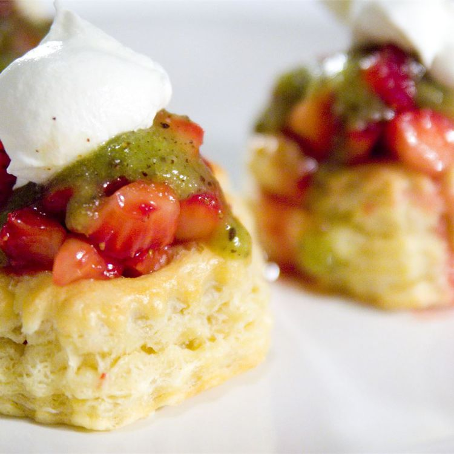

Strawberry Kiwi Tartlets

Description
Glazed strawberries in puff pastry shells, topped with kiwi sauce and homemade whipped cream. You NEED to try this delectable treat!
Ingredients
- 1 egg
- 2 teaspoons water
- 12 frozen puff pastry shells, thawed
- 1/3 cup strawberry preserves
- 2 pints fresh strawberries
- 4 kiwis, peeled and seeded
- 2 tablespoons honey
- 1/2 cup heavy cream
- 2 teaspoons confectioners' sugar
Steps
- Beat together the egg and water in a bowl. Brush the puff pastry shells with the egg mixture, and bake shells according to package directions.
- Melt the preserves in a saucepan over low heat. Remove from heat, and stir in the strawberry slices.
- In a food processor, blend the kiwis and honey until smooth. In a large bowl, beat together the cream and sugar until stiff peaks form.
- Fill each puff pastry shell with strawberries, drizzle with kiwi sauce, and top with whipped cream to serve.